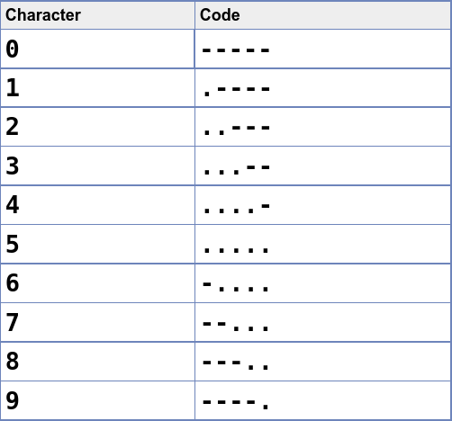

Vind het tweede cijfer voor de koffer door
- het eerste en tweede getal op tellen, dit wordt de eerste uitkomst
het derde en het vierde getal op te tellen, dit wordt de tweede uitkomst
- de code is de tweede uitkomst min de eerste uitkomst

Eerste getal:
Tweede getal:
Derde getal:
Vierde getal: